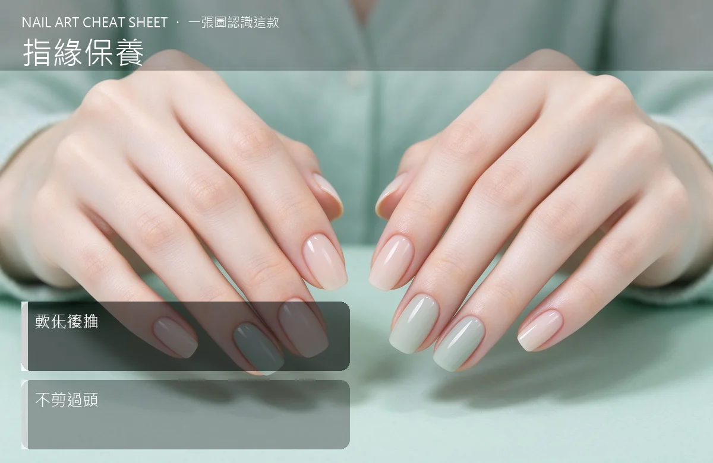

美甲指緣保養是什麼？入門入門攻略
指緣油是美甲人的最強保養品，一天擦 3 次，一個月後指緣不乾、倒甲邊也不長。
指緣保養原理與辨識重點：美甲師不說的天天擦油
指緣（甘皮）是指甲根部一圈薄薄的皮膚，負責保護甲母質。它一乾就會翹、會長倒刺、看起來粗糙。所謂「指緣保養」不是把皮剪掉，而是把這圈皮膚保養得軟軟嫩嫩，讓新長出來的指甲順順的。
誰適合做指緣保養？指緣乾燥對號入座
每個做美甲的人都要做；尤其常做凝膠、指緣乾燥、冬天換季容易長倒刺的人，是每天必做的基本功課。
指緣保養美甲施作步驟：指緣油＋甘皮軟化
洗完手或洗澡後（皮膚最軟的時候）→ 擠一顆綠豆大的指緣油在每指指根 → 用指腹畫圈按摩 10 秒 → 多餘的油順便擦整個手背 → 一天早晚各一次、辦公室放一罐隨手補。
指緣保養優缺點分析：美甲持久度與傷甲評估
| 優點 | 說明 |
|---|---|
| 指緣柔軟後，新長的指甲線條乾淨，做款式更好看、更持久，倒刺也幾乎不長。 | 是通用流派的招牌，入門就能上手 |
| 缺點 | 說明 |
| 養成習慣需要 2–3 週，剛開始會覺得麻煩，但習慣了就跟擦護手霜一樣自然。 | 前置與最大雷區是「自己剪甘皮」或「撕倒刺」，那很容易剪到活皮、流血、甚至發炎。倒刺用小剪刀平剪，不要用手拔；真的想修甘皮，給專業美甲師處理。沒顧好會打折 |

指緣保養新手雷區：軟化後推與常見錯誤
注意：最大雷區是「自己剪甘皮」或「撕倒刺」，那很容易剪到活皮、流血、甚至發炎。倒刺用小剪刀平剪，不要用手拔；真的想修甘皮，給專業美甲師處理。
指緣保養和其他美甲做法的差別比較
「指緣油」跟「護手霜」不一樣：護手霜是乳狀、偏滋潤皮膚；指緣油是油狀、滲透性強，能深入指縫。兩個都要擦，不能用護手霜代替指緣油。
指緣保養美甲常見問題 FAQ
Q：指緣油要買哪一種？ A：基礎款含維生素 E、荷荷芭油、橄欖油都可以，市售 100–300 元就有不錯的。重點不是牌子，是「有天天擦」。
Q：倒刺一直長怎麼辦？ A：倒刺＝指緣太乾。持續擦指緣油 2–4 週會明顯改善；長出來的倒刺用小剪刀平剪，不要撕。
Q：做凝膠的時候也要擦指緣油嗎？ A：要。而且做完美甲當天就要開始擦，凝膠下面的真甲還是需要保養，指緣油擦在指根、不會影響上面的膠。